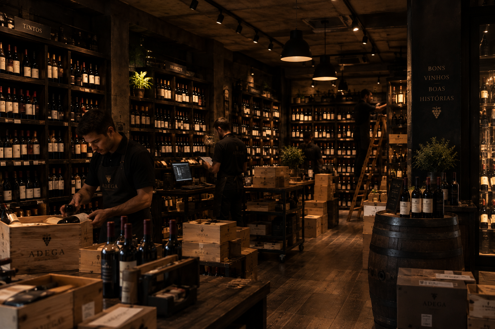

Quem cuida da Vinheria
A Vinheria Agnello é uma empresa de família. Por trás de cada recomendação existe uma equipe que conhece e gosta de verdade do universo do vinho.

Nossos líderes
Giulio
Fundador da vinheria, Giulio abriu a loja há mais de 15 anos com a ideia de oferecer bons vinhos acompanhados de uma orientação de confiança.
Bianca
Filha de Giulio e sócia na administração, Bianca liderou a chegada da vinheria ao mundo digital, mantendo o atendimento próximo que sempre foi a marca da casa.
Nossa equipe
Mais de 6 colaboradores cuidam de cada detalhe da vinheria:
| Administração | Estoque | Vendas |
|---|---|---|
| Finanças, compras e relação com fornecedores | Armazenagem correta de cada garrafa | Consultoria e harmonização para cada cliente |
Como escolhemos o vinho certo para você?
Nossos vendedores estudam uvas, regiões e rótulos para indicar o vinho ideal para cada ocasião. Veja no vídeo um pouco desse universo: